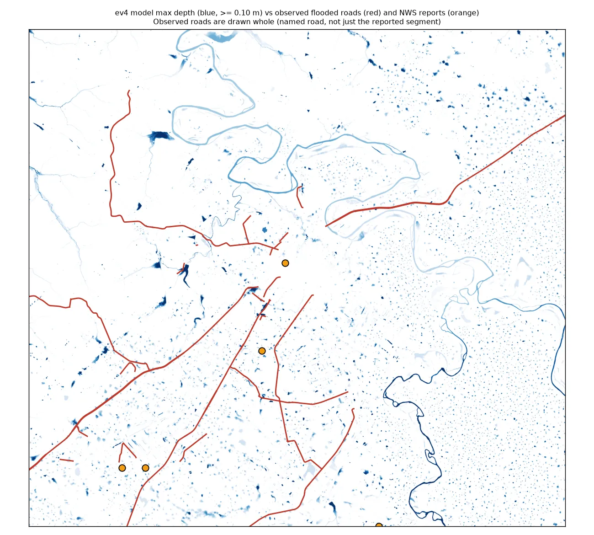

Framing
What "training" means here
I use "training" in the practitioner's sense: the full cycle by which a numerical model earns trust. For both tracks that means learning the physics, building the tooling, verifying that the code computes what it claims, validating against observations, calibrating the free parameters, coupling the pieces into one forecast-to-impact chain, and finally handing off to the people who make decisions, then feeding their feedback back in.
- Track 1: NWP Lab. Severe-convection modeling with Bryan's Cloud Model 1 (CM1): the storm environment and processes that decide where hazardous rain, wind and rotation occur.
- Track 2: Warren County flooding. A GPU shallow-water model that converts rainfall into depth on roads, buildings and facilities across Bowling Green and the county.
- The target user: local emergency management (county / city), who need where, how deep, how sure and what's affected, in a form they can use under time pressure.

Method
The training loop
- 1 · Learnvault notes, CM1 docs, hydrology texts
- 2 · Buildsolver, viewers, namelists, tools
- 3 · Verifymass balance, tile hashes, unit guards
- 4 · Validateagainst observed events (ev4 …)
- 5 · Calibratecurve number, Manning n, leave-one-out
- 6 · CoupleNWP rain into the flood solver
- 7 · Hand offEM co-design and guardrails
↺ Feedback from emergency managers (what they need, what failed, what was unclear) returns to step 1. Flood model: steps 1–3 done, first pass of 4. NWP lab: curriculum and reference (1–2) done; experiments (3–5) planned.
Evidence-based status
Readiness ladder
Each rung has to hold before the next one means anything. My current position on the flood model is L3 complete, L4 only weakly: verified and plausible, with weak observational evidence.
Numerically sound done
The solver conserves mass, respects its stability limit, and refuses absurd inputs.
evidence: mass-balance error 2.2 × 10⁻⁹ % (2-yr county) · CFL α = 0.3 · aborts above 600 mm/h · DEM datum check > 3 m · grid ≤ 150 M cellsTraceable and reproducible done
Every storm has a provenance record; unverified items are marked "not verified" instead of omitted; delivery files are hash-checked.
evidence: 324/324 COG files byte-identical to the Vista set · COG error ≤ 1 cm over 22,421 points · per-storm source and limits shown in the viewerPlausible under design rainfall done
Twelve storms run for the whole county; design depths agree with NOAA Atlas 14; runoff volume matches the SCS calculation.
evidence: 6 design storms within 3 % of Atlas 14 · 2-yr runoff 33.2 mm of 88.9 mm · 12 storms × 26 rastersSome skill against observed flooding weak
The model flags roads that officials reported flooded far more often than random roads, but this is not depth validation.
evidence: April 2025 replay, 16/21 reported roads ≥ 30 cm vs 27/100 random · AUC ≈ 0.84 · replay used ~½ of real rain · no upstream inflowCalibrated plan
Free parameters (curve number, Manning n, outflow slope) constrained by observations, tested on events not used for fitting.
approach: leave-one-out across the 6 historical gauge events · land-cover-based roughness (NLCD) instead of one flat valueHydraulically complete plan
The mechanisms that drive Warren County's real floods are represented: river inflow, storm drains, karst drainage.
gaps from the repo's own limits: Barren River inflow · storm drains · sinkhole / karst conduits · ~10 m terrain outside the cityForced by real rainfall, with uncertainty plan
Spatially varying radar / model rainfall instead of one gauge; ensembles turned into exceedance probabilities rather than a single depth.
approach: gridded rainfall → solver source term · N members → P(depth ≥ 30 cm) maps · CM1 process studies for the storm regimes that matter locallyCo-designed with emergency managers plan
Thresholds, formats and lead times set by the people who will use them; clear rules for when a product may and may not be used.
approach: structured questions (below) · tabletop exercises · written guardrails per output
Track 1
NWP Lab: preparing the severe-storm modeling for EM relevance
The flood model is only as useful as the rainfall that drives it, and EM also cares about wind, tornadoes and lightning. The NWP Lab track builds the atmospheric side: first knowledge, then controlled experiments.
1. Curriculum mapped onto model controls done
My 10-chapter vault (324 notes, 2,654 wikilinks) is organized so each concept lands on something I can set or read in CM1. Full reference: knowledge base and the namelist explorer.
| Concept (vault) | What I learn to control | CM1 handle |
|---|---|---|
| Stability, lapse rates, CAPE / CIN, LCL / LFC / EL (Ch 5) | Build a thermodynamic environment with a target instability | isnd=7 · input_sounding · output_cape/cin/lcl/lfc |
| Bulk shear, SRH, STP, SCP (Ch 5) | Set the hodograph and check composite parameters | input_sounding winds · output_uh |
| Precipitation processes: collision-coalescence, Bergeron-Findeisen (Ch 5) | Choose how rain and ice are represented | ptype 5 / 26 / 27 · ccn · output_dbz |
| Forces, geostrophic and gradient wind (Ch 6) | Dynamics and numerics choices | psolver · icor/fcor · lspgrad · bbc |
| Fronts, air masses, cold pools (Ch 8) | Initiate and organize convection | iinit 2 / 3 / 14 · testcase 18 |
| Forecasting and NWP (Ch 9) | Ensembles, resolution, verification thinking | irandp · numrand · dx/dz · restarts |
| Squall lines, QLCS, tornadoes (Ch 10) | Track hazards inside the simulation | output_vort/svs · output_sws · output_rain · testcase 17 |
2. Research questions plan
- Do ZDR columns carry usable lead time in high-shear, low-CAPE (HSLC) environments typical of the Southeast, where instability is low but shear is large?
- Which simulated behavior is closest to reality? Compare findings with actual radar observations and with higher-complexity models.
- Can other dual-polarization features improve real-time tracking and forecasting of QLCS evolution and severe hazards?
- Real-event reconstructions: simulate specific events, such as a derecho case, and run tornado cases at high detail, since a single machine can run more than one.
3. Experiment ladder plan
Warm-bubble or line-of-bubbles initiation (iinit 1 / 3) on a sounding file. Establish a baseline storm and confirm numerics: advection order and diffusion pairing, cfl_limit 1.0, stat_cfl clean.
Vary CAPE (moisture profile) and 0–6 km shear (hodograph) independently across the HSLC regime; compare microphysics (ptype 5 vs 26 / 27), spacing and ccn.
Perturb initial conditions with irandp and member index numrand; report spread, not a single run. Use parcels (iprcl) for updraft source analysis.
Initialize from observed soundings or analyses; verify surface wind swath, rain swath and rotation tracks against reports and radar.
4. Diagnostics that matter to EM plan
- Rainfall:
output_rainand 3-D hydrometeor fields, with accumulations and peak rates that can feed the flood solver (see the bridge). - Wind and rotation:
output_sws(max surface wind swath),output_svs(low-level vertical vorticity),output_uh(2–5 km updraft helicity). - ZDR-column metrics (derived): depth, area and volume of the enhanced-ZDR region above the freezing level, tracked against updraft strength and time to first severe signature.
- Verification: neighborhood / object-based comparison with radar and storm reports, not point-to-point pixel matching.
Track 2
Warren County flooding: from "runs" to "trusted"
Where it stands
- 12 storms, county + city domains
- Solver verification and mass balance
- COG tiles audited to ≤ 1 cm
- Web + desktop viewers with honesty labels
- First observation comparison (ev4)
- AUC ≈ 0.84 on road names
- No depth validation
- ~½ of real rainfall replayed
- Parameter calibration
- Upstream river inflow
- Storm-drain and karst representation
- Radar / NWP-driven rainfall

Calibration design plan
With six historical gauge events (Dec 2013, Mar 2015, Jun 2022, Apr 2025, Sep 2017 Harvey remnants, May 2010) I can do leave-one-event-out validation: fit on five, test on the sixth, rotate. That guards against tuning the model to a single flood.
| Parameter | Today | How it would be constrained |
|---|---|---|
| SCS curve number | 75 open · 98 impervious | Fit runoff volume to gauge-and-rainfall events; vary with land cover and antecedent wetness |
| Manning n | 0.035 outside city | Land-cover table (NLCD) instead of one flat value |
| Initial abstraction ratio | Ia = 0.2 S | Sensitivity test (lower ratios are common in the literature) |
| Edge outflow slope | 0.005 | Sensitivity; replace with gauge-based boundary where rivers cross edges |
Scores I will report plan
- Categorical at thresholds (0.10 / 0.30 m): hit rate, false-alarm ratio, critical success index, against mapped extent and closure records.
- Depth error against surveyed high-water marks: bias, RMSE, and the fraction within ±15 cm.
- Ranking skill (AUC) with a control that accounts for road length, since length alone already separates the ev4 groups about as well.
- Timing at gauges, so lead-time claims are earned.
Coupling
The bridge: NWP rainfall → flood depth
The whole chain I'm training toward is: environment → storm → rain field → runoff → depth → impacts.
- Environmentsounding, shear, CAPE, HSLC
- StormCM1, QLCS; ZDR, UH, wind
- Rain fieldP(x, y, t) as ensemble members
- Runoffcalibrated SCS plus river inflow
- Depth5 m grid, 24 h, P(h ≥ 30 cm)
- Impactsroads, buildings, shelters, utilities
Today the rain term is uniform over the domain and comes from a single gauge or a fixed design curve. The coupling step replaces it with a gridded rainfall field and turns one run into an ensemble. A sketch of the post-processing that turns members into a probability map:
# sketch: exceedance probability from N ensemble members (depth in metres, same 5 m grid)
import numpy as np, rasterio
members = [f"runs/ens_{i:02d}/max_depth.tif" for i in range(1, 31)]
stack = np.stack([rasterio.open(p).read(1) for p in members]) # (N, ny, nx)
p_30cm = (stack >= 0.30).mean(axis=0) # P(depth >= 30 cm) per cell
p_10cm = (stack >= 0.10).mean(axis=0) # ignore 2-3 cm rain-on-grid sheet flow
spread = stack.std(axis=0) # where members disagree mostDesign only: no ensemble flood runs exist yet. Rainfall sources under consideration are gridded radar-based QPE, station networks and CM1 or other model output, each with its own error that must be propagated rather than hidden.
Guardrails
Which outputs may be used for what
Every product is tied to the rung it needs. Move the slider to see what each rung would unlock. The default is my honest current position on the flood model.
L3: numerically sound, traceable, plausible
| Output (already built unless noted) | EM question it informs | Caveat that always applies | Needs | Status |
|---|---|---|---|---|
| Storm-scenario depth maps (design storms) | "Where does water collect in a 25-year rain?" for training and planning discussion | Not a forecast; depths unvalidated | L3 | |
| Storm compare / difference view | How much worse is the 100-yr than the 10-yr, and where? | Relative comparison only | L3 | |
| Address risk card | "Is this property likely to see water?" | Shows source and uncertainty; never a single number | L5 | |
| Building exposure filter (CSV / GeoJSON) | Which structures are in the 30 / 60 / 120 cm tiers? | Counts are model output; ≥ 10 cm threshold | L6 | |
| Dry-route finder | Which roads stay passable for responders? | Drains and conduits change real routes | L6 | |
| Critical-facility exposure (hospitals, shelters, utilities) | Which facilities lose access or power? | OSM coverage varies; verify with the owner | L6 | |
| Event forecast products (planned) | "What will flood in the next 6–24 h?" | Requires forcing, ensembles and EM co-design | L8 |
Communication rules I keep regardless of rung
- Show the source and the limits on every view, including that velocities are derived and depths unvalidated.
- No flooding below 10 cm is claimed. Rain-on-grid creates 2–3 cm sheet flow everywhere; tiers and building counts start at 10 cm.
- "Unknown" is not "dry." Roads not named in reports are unobserved, not confirmed safe.
- Return period applies to the rain, not the flood. Antecedent wetness, drainage and missing upstream inflow are outside it.
- Prefer probabilities and ranges over single depths once ensembles exist.
What I need
Validation data wish-list candidates
None of these is yet in the model. They are the observations that would move rungs L4→L6.
| Data | Constrains | Notes |
|---|---|---|
| Stream-gauge records (Barren River and tributaries) | Upstream inflow, timing, peak stage | Needed to represent riverine flooding at all |
| Dense rainfall: gauge networks, Kentucky Mesonet | Spatial rainfall pattern, uniform-rain error | Replaces the single-gauge assumption |
| Radar-based QPE (gridded) | Rain field P(x, y, t) | Gauge-adjusted product preferred; its error must be carried forward |
| NWS storm reports and local flood reports | Event timing and location | Reports are biased toward where people are |
| Post-event high-water marks | Depth bias / RMSE | The only direct test of depth accuracy |
| Road-closure logs from city / county | Categorical skill | Higher quality than names matched from news articles |
| Drainage network and karst features | L6 hydraulics | Official layers, not only DEM-derived depressions |
Co-design
Questions I want emergency managers to answer
The best way to avoid building the wrong product is to ask early. These are the questions I'd bring to a first conversation.
- What depth makes a road unusable for your vehicles and for the public? (30 cm is my assumption; yours may differ.)
- Which facilities and routes matter most during a flood, and who owns the authoritative data?
- What lead time is actionable, and what lead time is too short to matter?
- What format fits under pressure: map layer, PDF, dashboard, a few lines of text?
- How should uncertainty be shown so it helps rather than paralyzes?
- What would make you stop trusting a product after one bad miss, and how do I earn it back?
Roadmap
Proposed next steps plan
Ordered by how much each moves the readiness ladder per unit of effort.
- Re-run ev4 with the full four-day rainfall and report the same road-closure scores, to remove the half-rain confound.
- Add upstream Barren River inflow from gauge data as a boundary condition.
- NLCD-based roughness to replace the flat n = 0.035 outside the city.
- Leave-one-event-out calibration of curve number and roughness across the six historical events.
- Spatially varying rainfall test: drive one historical event with gridded rainfall and compare with the uniform-gauge result.
- First CM1 HSLC sensitivity set (Stage A/B above), then connect its rain-swath output to the flood solver as a process-study demo.
Related: flood model details · NWP Lab · knowledge base